가스기사 (2014-08-17 기출문제)
1과목: 가스유체역학
1. 밀도 1.2kg/m3의 기체가 직경 10㎝인 관속을 20m/s로 흐르고 있다. 관의 마찰계수가 0.02라면 1m 당 압력손실은 약 몇 Pa인가?
- 24
- 36
- 48
- 54
(정답률: 57%)

2. 온도 20℃의 이상기체가 수평으로 놓인 관 내부를 흐르고 있다. 유동 중에 놓인 작은 물체의 코에서의 정체온도(stagnation temperature)가 T2＝40℃ 이면 관에서의 기체의 속도(m/s)는? (단, 기체의 정압비열 Cp＝1040J/(kg·K)이고, 등엔트로피 유동이라고 가정한다.)
- 204
- 217
- 237
- 57 2
(정답률: 39%)
3. 정압비열(Cp)을 옳게 나타낸 것은?
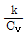
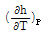
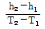
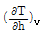
(정답률: 73%)
4. 동점성계수가 각각 1.1×10-6m2/s, 1.5×10-5m2/s인 물과 공기가 지름 10㎝인 원형관 속을 10㎝/s의 속도로 각각 흐르고 있을 때, 물과 공기의 유동을 옳게 나타낸 것은?
- 물 : 층류, 공기 : 층류
- 물 : 층류, 공기 : 난류
- 물 : 난류, 공기 : 층류
- 물 : 난류, 공기 : 난류
(정답률: 81%)
5. 충격파의 유동특성을 나타내는 Fanno 선도에 대한 설명 중 옳지 않은 것은?
- Fanno 선도는 열역학 제1법칙, 연속방정식, 상태방정식으로 부터 얻을 수 있다.
- 질량유량이 일정하고 정체 엔탈피가 일정한 경우에 적용된다.
- Fanno 선도는 정상상태에서 일정단면유로를 압축성 유체가 외부와 열교환하면서 마찰 없이 흐를 때 적용된다.
- 일정질량유량에 대하여 Mach수를 Parameter로 하여 작도한다.
(정답률: 74%)
6. 관내 유체의 급격한 압력 강하에 따라 수중으로부터 기포가 분리되는 현상은?
- 공기바인딩
- 감압화
- 에어리프트
- 캐비테이션
(정답률: 83%)
7. 관속을 유체가 층류로 흐를 때 관에서의 평균유속은 관 중심에서의 최대 유속의 얼마가 되는가?
- 0.5
- 0.75
- 0.82
- 1.00
(정답률: 71%)
8. 내경 60㎝의 관을 사용하여 수평거리 50km 떨어진 곳에 2m/s의 속도로 송수하고자 한다. 관마찰로 인한 손실수두는 약 몇 m에 해당하는가? (단, 관의 마찰계수는 0.02이다.)
- 240
- 340
- 440
- 40 5
(정답률: 74%)
9. 다음은 어떤 관내의 층류 흐름에서 관벽으로부터의 거리에 따른 속도구배의 변화를 나타낸 그림이다. 그림에서 shear stress가 가장 큰 곳은? (단, y는 관벽으로부터의 거리, u는 유속이다.)
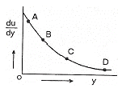
- A
- B
- C
- D
(정답률: 82%)
10. 마하수가 1보다 클 때 유체를 가속시키려면 어떻게 하여야 하는가?
- 단면적을 감소시킨다.
- 단면적을 증가시킨다.
- 단면적을 일정하게 유지시킨다.
- 단면적과는 상관없으므로 유체의 점도를 증가시킨다.
(정답률: 80%)
11. 베르누이 방정식을 유도할 때 필요한 가정 중 틀린 것은?
- 유선상의 두 점에 적용한다.
- 마찰이 없는 흐름이다.
- 압축성유체의 흐름이다.
- 정상상태의 흐름이다.
(정답률: 76%)
12. 그림과 같은 사이펀을 통하여 나오는 물의 질량 유량은 약 몇 kg/s인가? (단, 수면은 항상 일정하다.)
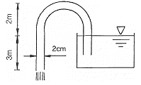
- 1.21
- 2.41
- 3.61
- 4.83
(정답률: 59%)
13. 유체의 흐름에서 유선이란 무엇인가?
- 유체흐름의 모든 점에서 접선 방향이 그 점의 속도 방향과 일치하는 연속적인 선
- 유체흐름의 모든 점에서 속도벡터에 평행하지 않는 선
- 유체흐름의 모든 점에서 속도벡터에 수직한 선
- 유체흐름의 모든 점에서 유동단면의 중심을 연결한 선
(정답률: 78%)
14. 충격파와 에너지선에 대한 설명으로 옳은 것은?
- 충격파는 이음속 흐름에서 갑자기 초음속 흐름으로 변할 때에만 발생한다.
- 충격파가 발생하면 압력, 온도, 밀도 등이 연속적으로 변한다.
- 에너지선은 수력구배선보다 속도수두만큼 위에 있다.
- 에너지선은 상상 상향 기울기를 갖는다.
(정답률: 77%)
15. 내경이 2.5×10-3m인 원관에 0.3m/s의 평균속도로 유체가 흐를 때 유량은 약 몇 m3/s인가?
- 1.06×10-6
- 1.47×10-6
- 2.47×10-6
- 5.23×10-6
(정답률: 71%)
16. 그림과 같이 유체의 흐름 방향을 따라서 단면적이 감소하는 영역(Ⅰ)과 증가하는 영역(Ⅱ)이 있다. 단면적의 변화에 따른 유속의 변화에 대한 설명으로 옳은 것을 모두 나타낸 것은? (단, 유동은 마찰이 없는 1차원 유동이라고 가정한다.)
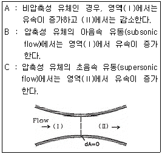
- A, B
- A, C
- B, C
- A, B, C
(정답률: 67%)
17. 표면장력에 대한 관성력의 비를 나타내는 무차원의 수는?
- Reynolds수
- Froude수
- 모세관수
- Weber수
(정답률: 72%)
18. 액체에서 마찰열에 의한 온도상승이 작은 이유를 옳게 설명한 것은?
- 단위질량당 마찰일이 일반적으로 크기 때문에.
- 액체의 열용량이 일반적으로 고체의 열용량보다 크기 때문에.
- 액체의 밀도가 일반적으로 고체의 밀도보다 크기 때문에.
- 내부에너지가 일반적으로 크기 때문에.
(정답률: 65%)
19. 1차원 유동에서 수직충격파가 발생하게 되면 어떻게 되는가?
- 속도, 압력, 밀도가 증가한다.
- 압력, 밀도, 온도가 증가한다.
- 도, 온도, 밀도가 증가한다.
- 압력은 감소하고 엔트로피가 일정하게 된다.
(정답률: 85%)
20. 유동하는 물의 속도가 12m/s이고 압력이 1.1kgf/cm2이다. 이 경우에 속도수두와 압력수두는 각각 약 몇 m인가? (단, 물의 밀도는 1000kg/m3이다.)
- 10.6, 11.0
- 7.35, 11.0
- 7.35, 10.6
- 10.6, 10.36
(정답률: 74%)
2과목: 연소공학
21. 용적100L인 밀폐된 용기 속에 온도 0℃에서의 8mole의 산소와 12mole의 질소가 들어있다면 이 혼합기체의 압력(kPa)은 약 얼마인가?
- 454
- 558
- 658
- 754
(정답률: 50%)
22. 418.6kJ/kg의 내부에너지를 갖는 20℃의 공기10kg이 탱크 안에 들어있다. 공기의 내부 에너지가 502.3kJ/kg 으로 증가할 때까지 가영하였을 경우 이때의 열량변화는 약 몇 kJ인가?
- 775
- 793
- 837
- 893
(정답률: 66%)
23. 연도가스의 몰조성이 CO2 : 25%, CO : 5%, N2 : 65%, O2 : 5%이면 과잉공기 백분율(%)은?
- 14.46
- 16.9
- 18.8
- 82.2
(정답률: 54%)
24. 발열량이 21MJ/kg인 무연탄이 7%의 습분을 포함한다면 무연탄의 발열량은 약 몇 MJ/kg인가?
- 16.43
- 17.85
- 19.53
- 21.12
(정답률: 61%)
25. 공기비가 작을 때 연소에 미치는 영향이 아닌 것은?
- 불완전연소가 되어 일산화탄소(CO)가 많이 발생한다.
- 미연소에 의한 열손실이 증가한다.
- 미연소에 의한 열효율이 증가한다.
- 미연소가스로 인한 폭발사고가 일어나기 쉽다.
(정답률: 71%)
26. 다음 기체 연료 중 발열량(MJ/Nm3)이 가장 작은 것은?
- 천연가스
- 석탄가스
- 발생로가스
- 수성가스
(정답률: 64%)
27. 연소속도에 관한 설명으로 옳은 것은?
- 단위는 kg/s으로 나타낸다.
- 미연소 혼합기류의 화염면에 대한 법선 방향의 속도이다.
- 연료의 종류, 온도, 압력과는 무관하다.
- 정지 관찰자에 대한 상대적인 화염의 이동속도이다.
(정답률: 62%)
28. 등심연소의 화염 높이에 대하여 옳게 설명한 것은?
- 공기 유속이 낮을수록 화염의 높이는 커진다.
- 공기 온도가 낮을수록 화염의 높이는 커진다.
- 공기 유속이 낮을수록 화염의 높이는 낮아진다.
- 공기 유속이 높고 공기 온도가 높을수록 화염의 높이는 커진다.
(정답률: 57%)
29. 다음과 같은 조성을 갖는 혼합가스의 분자량은? (단, 혼합가스의 체적비는 CO2(13.1%), O2(7.7%), N2(79.2%)이다.)
- 22.81
- 24.94
- 28.67
- 30.40
(정답률: 67%)
30. 800℃의 고열원과 100℃의 저열원 사이에서 작동하는 열기관의 효율은 얼마인가?
- 88%
- 65%
- 58%
- 55%
(정답률: 68%)
31. 안전성평가 기법 중 시스템을 하위 시스템으로 점점 좁혀 가고 고장에 대해 그 영향을 기록하여 평가하는 방법으로, 서브시스템 위험분석이나 시스템 위험분석을 위하여 일반적으로 사용되는 전형적인 정성적, 귀납적 분석기법으로 시스템에 영향을 미치는 모든 요소의 고장을 형태별로 분석하여 그 영향을 검토하는 기법은?
- 고장형태영향분석(FMEA)
- 원인결과분석(CCA)
- 위험 및 운전성 검토(HAZOP)
- 결함수분석(FTA)
(정답률: 73%)
32. 헬륨을 냉매로 하는 극저온용 가스냉동기의 기본사이클 이름은?
- 역르누아사이클
- 역아트킨슨사이클
- 역에릭슨사이클
- 역스털링사이클
(정답률: 77%)
33. 기상폭발의 발화원에 해당되지 않는 것은?
- 성냥
- 전기불꽃
- 화염
- 충격파
(정답률: 68%)
34. 과잉 공기비는 어떤 식에 의해 계산되는가?
- (실제공기량) ÷ (이론공기량)
- (실제공기량) ÷ (이론공기량) - 1
- (이론공기량) ÷ (실제공기량)
- (이론공기량) ÷ (실제공기량) - 1
(정답률: 59%)
35. 두께 4㎜인 강의 평판에 고온측 면의 온도가 100℃이고, 저온측 면의 온도가 80℃일 때 m2에 대해 30000kJ/min의 전열을 한다고 하면 이 강판의 열전도율은 약 몇 W/m℃인가?
- 100
- 120
- 130
- 40 1
(정답률: 35%)
36. 프로판(C3H8)의 연소반응식은 다음과 같다. 프로판(C3H8)의 화학양론계수는?
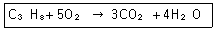
- 1
- 1/5
- 6/7
- -1
(정답률: 75%)
37. 증기운폭발(VCE)에 대한 설명 중 틀린 것은?
- 증기운의 크기가 증가하면 점화확률이 커진다.
- 증기운에 의한 재해는 폭발보다는 화재가 일반적이다.
- 폭발효율이 커서 연소에너지의 전부가 폭풍파로 전환된다.
- 방출점으로부터 먼 지점에서의 증기운의 점화는 폭발의 충격을 증가시킨다.
(정답률: 68%)
38. 다음 중 연소 3대 요소가 아닌 것은?
- 공기
- 가연물
- 시간
- 점화원
(정답률: 84%)
39. 가연성 혼합기 중에서 화염이 형성되어 전파할 수 있는 가연성 기체 농도의 한계를 의미하지 않는 것은?
- 연소한계
- 폭발한계
- 가연한계
- 소염한계
(정답률: 66%)
40. 과잉공기계수가 1일 때 224Nm3의 공기로 탄소는 약 몇 kg을 완전 연소시킬 수 있는가?
- 20.1
- 23.4
- 25.2
- 27.3
(정답률: 61%)
3과목: 가스설비
41. 도시가스사업법에서 정의하는 것으로 가스를 제조하여 배관을 통하여 공급하는 도시가스가 아닌 것은?
- 천연가스
- 나프타부생가스
- 석탄가스
- 바이오가스
(정답률: 67%)
42. 역카르노 사이클로 작동되는 냉동기가 20kW의 일을 받아서 저온체에서 20kcal/s의 열을 흡수한다면 고온체로 방출하는 열량은 약 몇 kcal/s인가?
- 14.8
- 24.8
- 34.8
- 44.8
(정답률: 61%)
43. 다음[조건]에 따라 연소기를 설치할 때 적정용기 설치 갯수는? (단, 표준가스 발생능력은 1.5kg/h이다.)
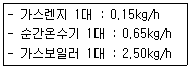
- 20kg 용기 : 2개
- 20kg 용기 : 3개
- 20kg 용기 : 4개
- 20kg 용기 : 7개
(정답률: 66%)
44. 고압가스 탱크의 수리를 위하여 내부가스를 배출하고 불활성 가스로 치환하여 다시 공기로 치환하였다. 내부의 가스를 분석한 결과 탱크 안에서 용접작업을 해도 되는 경우는?
- 산소 20%
- 질소 85%
- 수소 2%
- 일산화탄소 100ppm
(정답률: 80%)
45. 지하에 설치하는 지역정압기실(기지)의 조작을 안전하고 확실하게 하기 위하여 조명도는 최소 어느 정도로 유지하여야 하는가?
- 80Lux 이상
- 100Lux 이상
- 150Lux 이상
- 200Lux 이상
(정답률: 78%)
46. 다음 중 역류를 방지하기 위하여 사용되는 밸브는?
- 체크밸브(check valve)
- 글로우브 밸브(glove valve)
- 게이트 밸브(gate valve)
- 버터플라이 밸브(butterfly valve)
(정답률: 73%)
47. 액화석유가스 사용시설에 대한 설명으로 틀린 것은?
- 저장설비로부터 중간밸브까지의 배관은 강관·등관 또는 금속플렉시블 호스로 한다.
- 건축물 안의 배관은 매설하여 시공한다.
- 건축물의 벽을 통과하는 배관에는 보호관과 부식방지 피복을 한다.
- 호스의 길이는 연소기까지 3m 이내로 한다.
(정답률: 68%)
48. 고무호스가 노후 되어 직경 1㎜의 구멍이 뚫려 280㎜H2O의 압력으로 LP가스가 대기 중으로 2시간 유출되었을 때 분출된 가스의 양은 약 몇 L인가? (단, 가스의 비중은 1.6이다.)
- 140L
- 238L
- 348L
- 672L
(정답률: 69%)
49. 지하에 매설하는 배관의 이음방법으로 가장 부적합한 것은?
- 링조인트 접합
- 용접 접합
- 전기융착 접합
- 열융착 접합
(정답률: 63%)
50. 액화석유가스용 염화비닐호스의 안지름 치수가 12.7㎜인 경우 제 몇 종으로 분류되는가?
- 1
- 2
- 3
- 4
(정답률: 52%)
51. 다음 중 인장시험 방법에 해당하는 것은?
- 올센법
- 샤르피법
- 아이조드법
- 파우더법
(정답률: 75%)
52. 구리 및 구리합금을 고압장치의 재료로 사용하기에 가장 적당한 가스는?
- 아세틸렌
- 황화수소
- 암모니아
- 산소
(정답률: 71%)
53. 고압가스용 스프링식 안전밸브의 구조에 대한 설명으로 틀린 것은?
- 밸브 시트는 이탈되지 않도록 밸브 몸통에 부착되어야 한다.
- 안전밸브는 압력을 마음대로 조정할 수 없도록 봉인된 구조로 한다.
- 가연성가스 또는 독성가스용의 안전밸브는 개방형으로 한다.
- 안전밸브는 그 일부가 파손되어도 충분한 분출량을 얻어야 한다.
(정답률: 75%)
54. 동력 및 냉동시스템에서 사이클의 효율을 향상시키기 위한 방법이 아닌 것은?
- 재생기 사용
- 다단 압축
- 다단 팽창
- 압축비 감소
(정답률: 69%)
55. 다음 [그림]은 가정용 LP가스 소비시설이다. R1에 사용되는 조정기의 종류는?
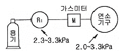
- 1단 감압식 저압조정기
- 1단 감압식 중압조정기
- 1단 감압식 고압조정기
- 2단 감압식 저압조정기
(정답률: 78%)
56. 배관의 전기방식 중 희생양극법에서 저전위 금속으로 주로 사용되는 것은?
- 철
- 구리
- 칼슘
- 마그네슘
(정답률: 71%)
57. 펌프의 유효 흡입수두(NPSH)를 가장 잘 표현한 것은?
- 펌프가 흡입할 수 있는 전흡입 수두로 펌프의 특성을 나타낸다.
- 펌프의 동력을 나타내는 척도이다.
- 공동현상을 일으키지 않을 한도의 최대 흡입 양정을 말한다.
- 공동현상 발생조건을 나타내는 척도이다.
(정답률: 64%)
58. 압력에 따른 도시가스 공급방식의 일반적인 분류가 아닌 것은?
- 저압공급방식
- 중압공급방식
- 고압공급방식
- 초고압공급방식
(정답률: 80%)
59. LiBr - H2O 형 흡수식 냉·난방기에 대한 설명으로 옳지 않은 것은?
- 증발기 내부압력을 5~6㎜Hg로 할 경우 물은 약 5℃에서 증발한다.
- 증발기 내부의 압력은 진공상태이다.
- 냉매는 LiBr이다.
- LiBr 은 수증기를 흡수할 때 흡수열이 발생한다.
(정답률: 65%)
60. 흡입구경이 100㎜, 송출구경이 90㎜인 원심펌프의 올바른 표시는?
- 100×90 원심펌프
- 90×100 원심펌프
- 100-90 원심펌프
- 90-100 원심펌프
(정답률: 81%)
4과목: 가스안전관리
61. 산업재해 발생 및 그 위험요인에 대하여 짝지어진 것 중 틀린 것은?
- 화재, 폭발 - 가연성, 폭발성 물질
- 중독 - 독성가스, 유독물질
- 난청 - 누전, 배선불량
- 화상, 동상 - 고온, 저온물질
(정답률: 82%)
62. 아세틸렌 용기의 15℃에서의 최고충전압력은 1.55MPa이다. 아세틸렌 용기의 내압시험압력 및 기밀시험압력은 각각 얼마인가?
- 4.65MPa, 1.71MPa
- 2.58MPa, 1.55MPa
- 2.58MPa, 1.71MPa
- 4.65MPa, 2.79MPa
(정답률: 43%)
63. 고압가스를 충전하는 내용적 500L 미만의 용접용기가 제조 후 경과 년수가 15년 미만일 경우 재검사 주기는?
- 1년마다
- 2년마다
- 3년마다
- 5년마다
(정답률: 50%)
64. 고압가스 저온저장탱크의 내부 압력이 외부압력보다 낮아져 저장탱크가 파괴되는 것을 방지하기 위한 조치로 설치하여야 할 설비로 가장 거리가 먼 것은?
- 압력계
- 압력경보설비
- 진공안전밸브
- 역류방지밸브
(정답률: 70%)
65. 고압가스 운반차량에 대한 설명으로 틀린 것은?
- 액화가스를 충전하는 탱크에는 요동을 방지하기 위한 방파판 등을 설치한다.
- 허용농도가 200ppm 이하인 독성가스는 전용차량으로 운반한다.
- 가스운반 중 누출 등 위해 우려가 있는 경우에는 소방서 및 경찰서에 신고한다.
- 질소를 운반하는 차량에는 소화설비를 반드시 휴대하여야 한다.
(정답률: 78%)
66. 아세틸렌을 용기에 충전하는 작업에 대한 내용으로 틀린 것은?
- 아세틸렌을 2.5MPa의 압력으로 압축하는 때에는 질소, 메탄, 일산화탄소 또는 에틸렌 등의 희석제를 첨가할 것
- 습식아세틸렌발생기의 표면은 70℃ 이하의 온도로 유지하여야 하며, 그 부근에서는 불꽃이 튀는 작업을 하지 아니할 것
- 아세틸렌을 용기에 충전하는 때에는 미리 용기에 다공성물지질을 고루 채워 다공도가 80% 이상 92% 미만이 되도록 한 후 아세톤 또는 디메틸포름아미드를 고루 침윤시키고 충전할 것
- 아세틸렌을 용기에 충전하는 때의 충전중의 압력은 2.5MPa 이하로 하고, 충전 후에는 압력이 15℃에서 1.5MPa 이하로 될 때까지 정치하여 둘 것
(정답률: 69%)
67. 고압가스 저장탱크에 설치하는 방류둑에 대한 설명으로 옳지 않은 것은?
- 흙으로 방류둑을 설치할 경우 경사를 45° 이하로 하고 성토 윗부분의 폭은 30㎝ 이상으로 한다.
- 방류둑에는 출입구를 둘레 50m 마다 1개 이상 설치하고 둘레가 50m 미만일 경우에는 2개 이상의 출입구를 분산하여 설치한다.
- 방류둑의 배수조치는 방류둑 밖에서 배수 및 차단 조작을 할 수 있어야 하며 배수할 때 이외에는 반드시 닫혀 있도록 한다.
- 독성가스 저장 탱크의 방류둑 높이는 가능한 한 낮게하여 방류둑 내에 체류한 액의 표면적이 넓게 되도록 한다.
(정답률: 75%)
68. 암모니아가스 누출 검지의 특징으로 틀린 것은?
- 냄새 → 악취
- 적색리트머스시험지 → 청색으로 변함
- 진한 염산 접촉 → 흰연기
- 네슬러시약 투입 → 백색으로 변함
(정답률: 70%)
69. 2개 이상의 탱크를 동일한 차량에 고정하여 운반하는 경우의 기준에 대한 설명으로 틀린 것은?
- 탱크마다 탱크의 주밸브를 설치한다.
- 탱크와 차량사이를 단단하게 부착하는 조치를 한다.
- 충전관에는 안전밸브를 설치한다.
- 충전관에는 유량계를 설치한다.
(정답률: 68%)
70. 아세틸렌의 화학적 성질에 대한 설명으로 틀린 것은?
- 산소-아세틸렌 불꽃은 약 3000℃이다.
- 아세틸렌은 흡열화합물이다.
- 암모니아성 질산은 용액에 아세틸렌을 통하면 백색의 아세틸라이드를 얻는다.
- 백금촉매를 사용하여 수수화하면 메탄이 생성된다.
(정답률: 53%)
71. 공기액화분리기를 운전하는 과정에서 안전대책상 운전을 중지하고 액화산소를 방출해야 하는 경우는? (단, 액화산소통 내의 액화산소 5L 중의 기준이다.)
- 아세틸렌이 0.1mg 을 넘을 때
- 아세틸렌이 5mg 을 넘을 때
- 탄화수소의 탄소의 질량이 5mg 을 넘을 때
- 탄화수소의 탄소의 질량이 50mg 을 넘을 때
(정답률: 71%)
72. 용기 내장형 난방기용 용기의 넥크링 재료는 탄소함유량이 얼마 이하이어야 하는가?
- 0.28%
- 0.30%
- 0.35%
- 0.40%
(정답률: 48%)
73. 정압기 설치 시 주의사항에 대한 설명으로 가장 옳은 것은?
- 최고 1차 압력이 정압기의 설계 압력 이상이 되도록 선정한다.
- 대규모 지역의정압기로서 사용하는 경우 동특성이 우수한 정압기를 선정한다.
- 스프링제어식의 정압기를 사용할 때에는 필요한 1차 압력 설정범위에 적합한 스프링을 사용한다.
- 사용조건에 따라 다르나, 일반적으로 최저 1차 압력의 정압기 최대용량의 60~80% 정도의 부하가 되도록 정압기 용량을 선정한다.
(정답률: 46%)
74. 수소의 특성으로 인한 폭발, 화재 등의 재해 발생원인으로 가장 거리가 먼 것은?
- 가벼운 기체이므로 가스가 확산하기 쉽다.
- 고온, 고압에서 강에 대해 탈탄 작용을 일으킨다.
- 공기와 혼합된 경우 폭발범위가 약 4~75%이다.
- 증발잠열로 인해 수분이 동결하여 밸브나 배관을 폐쇄시킨다.
(정답률: 65%)
75. 소형저장 탱크에 액화석유가스를 충전하는 때에는 액화가스의 용량이 상용온도에서 그 저장탱크 내용적의 몇 %를 넘지 않아야 하는가?
- 75%
- 80%
- 85%
- 90%
(정답률: 66%)
76. 고압가스제조시설 사업소에서 안전관리자가 상주하는 사무소와 현장사무소와의 사이 또는 현장사무소 상호간 신속히 통보할 수 있도록 통신시설을 갖추어야 하는데 이에 해당되지 않는 것은?
- 구내방송설비
- 메가폰
- 인터폰
- 페이징설비
(정답률: 78%)
77. 어느 가스용기에 구리관을 연결시켜 사용하던 도중 구리관에 충격을 가하였더니 폭발사고가 발생하였다. 이 용기에 충전된 가스로서 가장 가능성이 높은 것은?
- 황화수소
- 아세틸렌
- 암모니아
- 산소
(정답률: 70%)
78. 액화석유가스용 차량에 고정된 탱크의 폭발을 방지하기 위하여 탱크 내벽에 설치하는 장치로서 가장 절절한 것은?
- 다공성 벌집형 알루미늄합금박판
- 다공성 벌집형 아연합금박판
- 다공성 봉형 알루미늄합금박판
- 다공성 봉형 아연합금박판
(정답률: 77%)
79. 도시가스 배관을 지하에 매설하는 경우 배관은 그 외면으로부터 지하의 다른 시설물과 얼마 이상을 유지하여야 하는가?
- 1.0m
- 0.7m
- 0.5m
- 0.3m
(정답률: 48%)
80. 콕 제조 기술기준에 대한 설명으로 틀린 것은?
- 1개의 핸들로 1개의 유로를 개폐하는 구조로 한다.
- 완전히 열었을 때 핸들의 방향은 유로의 방향과 직각인 것으로 한다.
- 닫힌 상태에서 예비적 동작이 없이는 열리지 아니하는 구조로 한다.
- 핸들의 회전 각도를 90°나 180°로 규제하는 스토퍼를 갖추어야 한다.
(정답률: 72%)
5과목: 가스계측기기
81. 가스공급용 저장탱크의 가스저장량을 일정하게 유지하기 위하여 탱크내부의 압력을 측정하고 측정된 압력과 설정압력(목표압력)을 비교하여 탱크에 유입되는 가스의 양을 조절하는 자동제어계가 있다. 탱크내부의 압력을 측정하는 동작은 다음 중 어디에 해당하는가?
- 비교
- 판단
- 조작
- 검출
(정답률: 65%)
82. 선팽창계수가 다른 두 종류의 금속을 맞대어 온도변화를 주면 휘어지는 것을 이용한 온도계는?
- 저항 온도계
- 바이메탈 온도계
- 열전대 온도계
- 유리 온도계
(정답률: 74%)
83. 1kmol의 가스가 0℃, 1기압에서 22.4m3의 부피를 갖고 있을 때 기체상수는 얼마인가?
- 0.082kg·m/kmol·K
- 848kg·m/kmol·K
- 1.98kg·m/kmol·K
- 8.314kg·m/kmol·K
(정답률: 62%)
84. 자동제어에서 희망하는 온도에 일치시키려는 물리량을 무엇이라 하는가?
- 목표값
- 제어대상
- 되먹임 양
- 편차량
(정답률: 70%)
85. 다음 중 직접식 액면 측정기기는?
- 부자식 액면계
- 벨로우즈식 액면계
- 정전용량식 액면계
- 전기저항식 액면계
(정답률: 71%)
86. 모발습도계에 대한 설명으로 틀린 것은?
- 히스테리시스가 없다.
- 재현성이 좋다.
- 구조가 간단하고 취급이 용이하다.
- 한냉지역에서 사용하기가 편리하다.
(정답률: 75%)
87. 머무른 시간이 407초, 길이 12.2m 컬럼에서의 띠너비를 바닥에서 측정하였을 때 13초이었다. 이때 단높이는 몇 ㎜인가?
- 0.58
- 0.68
- 0.78
- 0.88
(정답률: 48%)
88. 루트식 유량계의 특징에 대한 설명 중 틀린 것은?
- 스트레이너의 설치가 필요하다.
- 맥동에 의한 영향이 대단히 크다.
- 적은 유량에서는 동작되지 않을 수 있다.
- 구조가 비교적 복잡하다.
(정답률: 59%)
89. 오르자트(Orsat) 가스분석기에 의한 배기가스 각 성분의 계산식으로 틀린 것은?
- N2[%]＝100-(CO2[%] - O2[%] - CO[%])
- CO[%]＝(암모니아성 염화제일구리용액 / 흡수량 시료채취량)× 100
- O2[%]＝(알칼리성피로카롤용액 흡수량 / 시료채취량) × 100
- CO2[%]＝(30% KOH 용액 흡수량 / 시료채취량) × 100
(정답률: 70%)
90. 염화파라듐지로 일산화탄소의 누출유무를 확인할 경우 누출이 되었다면 이 시험지는 무슨 색으로 변하는가?
- 검은색
- 청색
- 적색
- 오렌지색
(정답률: 68%)
91. 내경 30㎝인 어떤 관속에 내경 15㎝인 오리피스를 설치하여 물의 유량을 측정하려 한다. 압력강하는 0.1kgf/cm2이고, 유량계수는 0.72일 때 물의 유량은 약 몇 m3/s인가?
- 0.028m3/s
- 0.28m3/s
- 0.⑤6m3/s
- 0.56m3/s
(정답률: 39%)
92. 대규모의 플랜트가 많은 화학공장에서 사용하는 제어방식이 아닌 것은?
- 비율제어(ratio control)
- 요소제어(element control)
- 종속제어(cascade control)
- 전치제어(feed forward control)
(정답률: 52%)
93. 캐리어가스의 유량이 60mL/min이고, 기록지의 속도가 3㎝/min일 때 어떤 성분시료를 주입하였더니 주입점에서 성분피크까지의 길이가 15㎝이었다. 지속용량은 약 mL인가?
- 100
- 200
- 300
- 400
(정답률: 71%)
94. 부르동관(Bourdon tube)에 대한 설명 중 틀린 것은?
- 다이어프램압력계 보다 고압 측정이 가능하다.
- C 형, 와권형, 나선형, 버튼형 등이 있다.
- 계기 하나로 2공정의 압력차 측정이 가능하다.
- 국관에 압력이 가해지면 곡률 반경이 증대되는 것을 이용한 것이다.
(정답률: 63%)
95. 다음 [보기]에서 설명하는 가스미터는?
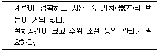
- 막식가스미터
- 습식가스미터
- 루트(Roots)미터
- 벤투리미터
(정답률: 75%)
96. 가스크로마토그래피의 캐리어가스로 사용하지 않는 것은?
- He
- N2
- Ar
- O2
(정답률: 78%)
97. 스프링식 저울의 경우 측정하고자 하는 물체의 무게가 작용하여 스프링의 변위가 생기고 이에 따라 바늘의 변위가 생겨 지시하는 양으로 물체의 무게를 알 수 있다. 이와 같은 측정방법은?
- 편위법
- 영위법
- 치환법
- 보상법
(정답률: 81%)
98. 자동조절계의 비례적분동작에서 적분시간에 대한 설명으로 가장 적당한 것은?
- P동작에 의한 조작신호의 변화가 I동작만으로 일어나는데 필요한 시간
- P동작에 의한 조작신호의 변화가 PI동작만으로 일어나는데 필요한 시간
- I동작에 의한 조작신호의 변화가 PI동작만으로 일어나는데 필요한 시간
- I동작에 의한 조작신호의 변화가 P동작만으로 일어나는데 필요한 시간
(정답률: 50%)
99. 다음 중 화학적 가스 분석방법에 해당하는 것은?
- 밀도법
- 열전도율법
- 적외선 흡수법
- 연소열법
(정답률: 54%)
100. 진동이 일어나는 장치의 진동을 억제하는 데 가장 효과적인 제어동작은?
- 뱅뱅동작
- 비례동작
- 적분동작
- 미분동작
(정답률: 56%)
ΔP = f × (L/D) × (ρV²/2)
여기서,
ΔP: 압력손실 (Pa)
f: 마찰계수
L: 관의 길이 (m)
D: 관경 (m)
ρ: 기체의 밀도 (kg/m³)
V: 기체의 속도 (m/s)
문제에서 주어진 값들을 대입하면,
ΔP = 0.02 × (1/0.1) × (1.2 × 20²/2) ≈ 48 (Pa)
따라서, 1m 당 압력손실은 약 48Pa이다.